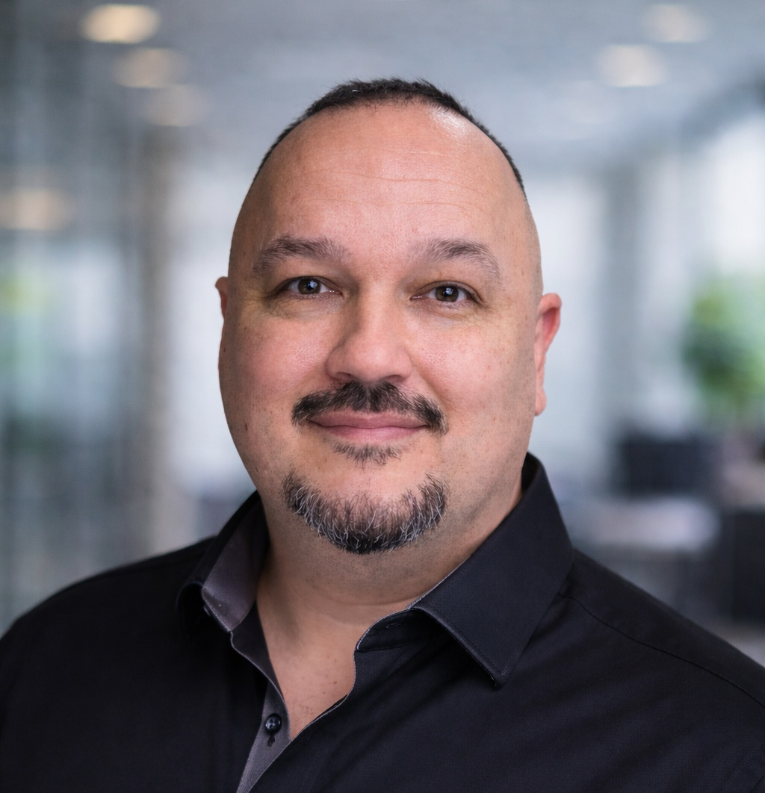
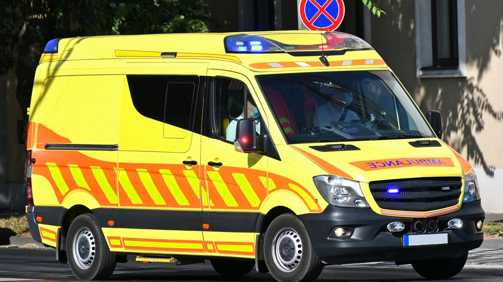
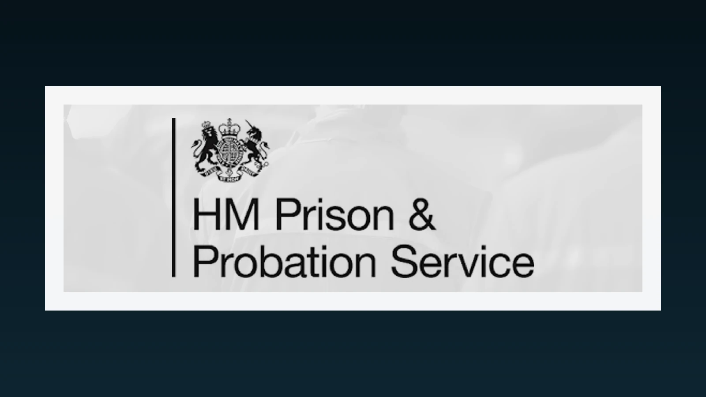
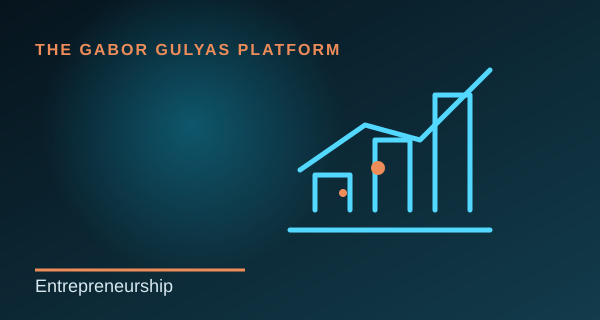
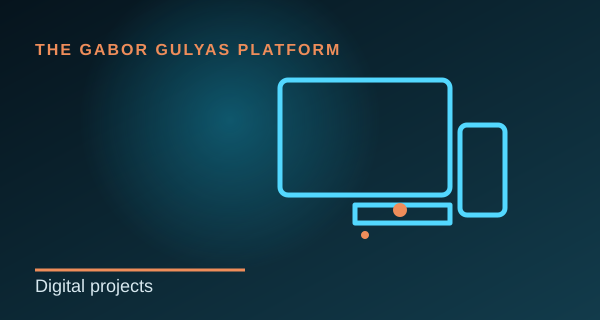
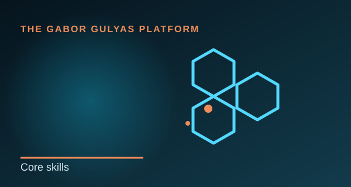
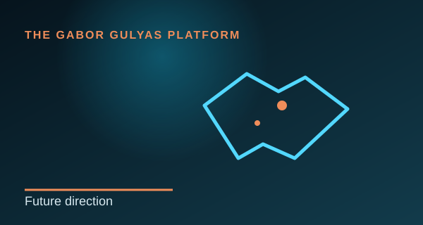
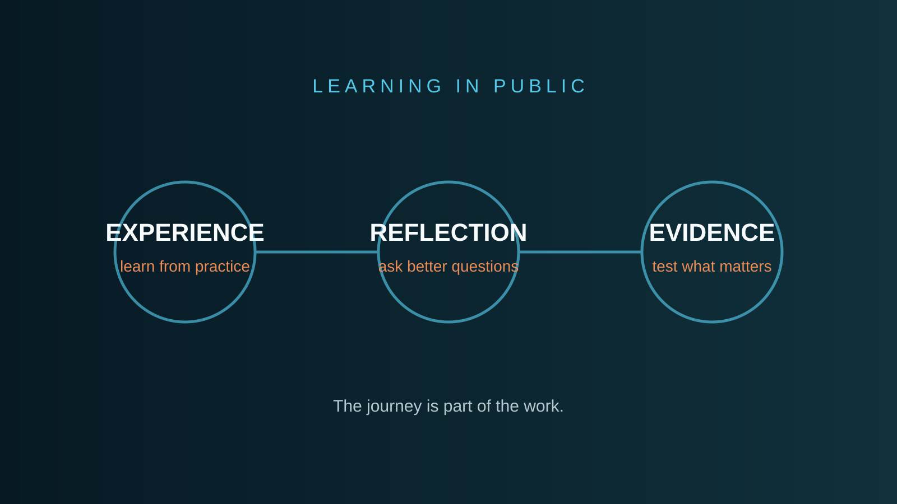

My professional story—from an ambulance, through business ownership and the UK Civil Service, to technology, business education and research.

Explore
Not a list of jobs. A connected capability story.
Each chapter contributed a different part of the way I now approach organisations and research.

Operations
It all started on an ambulance.
Planning, compliance and delivery in complex environments.
Read more →
It all started on an ambulance. Early in my career I worked as a Paramedic with the Hungarian National Ambulance Service, responding to emergency calls and providing pre-hospital emergency care.
What it taught me
Under pressure, perfect information is rarely available. Decisions still have to be made, responsibility accepted and teamwork maintained.
Why it still matters
The lessons I learned as a Paramedic continue to shape how I think about leadership, risk, trust and organisational decision-making.

Public service
Responsibility, structure and public value.
Supporting structure, accountability and second chances.
Read more →
Community Payback required the coordination of people, tasks, locations and safety requirements within a highly regulated environment.
The operational reality
Work planning, risk assessment, partner relationships, documentation, performance monitoring and practical problem-solving were part of daily delivery.
The leadership lesson
Accountability and rehabilitation are not opposites. Good operations create room for both through clear expectations and respectful treatment.

Business
My business, my responsibility.
Commercial responsibility developed through building and running a business.
Read more →
Running Gab-Cab Sevenoaks taught me what responsibility feels like when every decision directly affects the customer, revenue, reputation and the next working day.
What it involved
Planning, customer communication, financial administration, compliance, time management and service quality.
The key lesson
In a small business, strategy is not a separate document. It appears in everyday decisions.

Technology
Technology gave me another perspective.
Web, branding, infrastructure and practical use of AI.
Read more →
My First Class BSc (Hons) in Cloud Computing was not an attempt to become a software developer. It was about understanding how systems, data, infrastructure and business operations connect.
Practical application
Websites, digital portfolios, automation ideas, cloud-based thinking and small-business projects.
The operational connection
Technology becomes valuable when it makes work simpler, clearer or more effective.

Capability
Capabilities built across different environments.
Leadership, strategy, communication, problem solving and technology.
Read more →
Operational coordination, stakeholder communication, resource planning, service delivery, documentation, compliance awareness, process improvement and digital confidence.
Not isolated skills
Together, they help me create structure in complex situations and find solutions that can actually be delivered.
Learning while working
I completed a First Class BSc and an MBA with Distinction while working full time. That says as much about discipline and resilience as the qualifications themselves.

Future direction
The next chapter: from experience to evidence.
Helping organisations build capabilities around AI and change.
Read more →
The MBA and my research work helped connect practical operations with organisational strategy, technology and the value organisations may create from AI.
Current direction
Working Paper No. 1, the Capability-to-Value Model, preparation of my first publication and continued doctoral applications.
Long-term goal
Applied research and advisory work that supports better decisions, stronger organisational capability and, over time, opportunities for others.

Writing & research development
Learning in Public
A growing series of reflections documenting how practical questions become research ideas before formal publication.
Read more →
I use LinkedIn as a public notebook for ideas that are still developing. The posts are deliberately separated from formal publications: they show the questions, uncertainty and learning that happen before academic evidence is ready.
What it demonstrates
Consistency, reflective practice, professional writing, academic identity building and the ability to translate complex organisational and AI questions into accessible language.
Current stage
The series now includes reflections on AI value, organisational capability, leadership, “good enough” technology and the persistence required to pursue doctoral research.